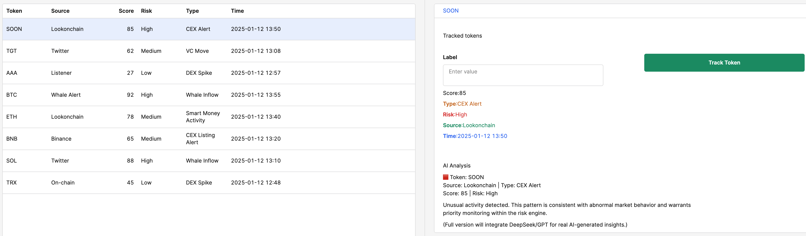

Dashboard views
Replace the grey placeholders below with your own screenshots from Retool. For investors and i-Lab judges, these views already show the core logic of the engine.
FR · Vue d’ensemble Vue d’ensemble du moteur de signaux — activité des tokens, volume de signaux et alertes à haut risque.
High-level view of active tokens, signal volume in the last 24h, and high-risk alerts.
2. Token detail + AI insight panel
FR Analyse détaillée d’un token — métriques, source des signaux et explication automatique générée par l’IA.
Drill-down view for a single token, showing metrics, source information and an AI-generated explanation of the risk.
3. Watchlist & alert logs
FR Suivi temporel des tokens — historique des alertes et préparation aux intégrations Telegram / webhook.
Time-series view of tracked tokens, alert history, and readiness for Telegram / email / webhook integrations.

How the demo is powered
The demo is backed by a real monitoring engine (codebase ≈80% complete) running on your local
infrastructure:
• alpha_listener modules for Twitter, CEX announcements and RSS
• Multi-chain on-chain listeners and VC/whale wallet trackers
• Strategy layer (pinbar detectors, cluster analysis, volatility & trend modules)
• AI layer using DeepSeek / GPT for signal explanation and ranking
• Notion + Telegram integrations for logging and alerting
From demo to product
For the i-Lab competition and investors, this demo illustrates the future SaaS / API products:
• Risk Score SaaS — per-token risk scoring for exchanges and funds
• Token Intelligence API — usage-based API for event-level intelligence
• Whale Alert Pro — subscription-based dashboard for VC & whale activity
• Enterprise integrations — custom feeds and risk models for regulated entities
The goal is to evolve from a research-grade monitoring stack into a production-ready,
explainable risk intelligence platform.
Interested in collaborating?
We are looking for design partners (CEX / fund / L2 project) to co-design risk dashboards and scoring models ahead of the 2026 i-Lab. </